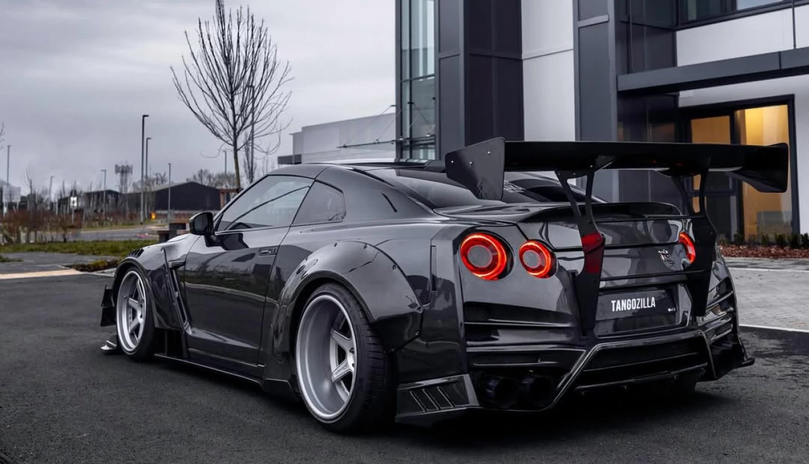
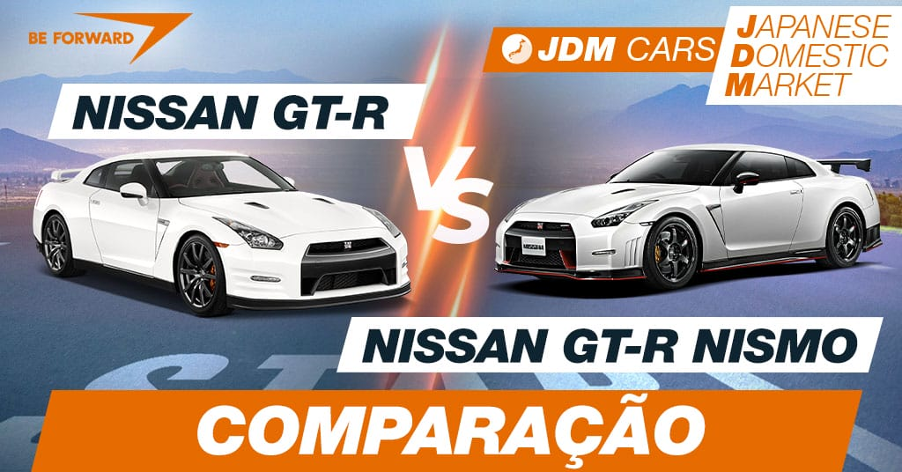

O Nissan GT‑R R35 é um dos carros esportivos mais conhecidos do mundo. Lançado em 2007, ele ganhou fama pelo desempenho impressionante, tecnologia avançada e visual agressivo. Seu motor 3.8 V6 biturbo entrega muita potência, permitindo acelerações extremamente rápidas. Além disso, o sistema de tração integral AWD oferece grande estabilidade e controle em altas velocidades.
Conhecido pelo apelido de “Godzilla”, o Nissan GT‑R R35 se tornou referência entre os amantes de carros esportivos e preparação automotiva. O modelo é muito utilizado em jogos, filmes e eventos automotivos por causa do seu estilo marcante e ronco forte. Mesmo sendo um carro de luxo, ele consegue competir com superesportivos muito mais caros em desempenho e velocidade.

